- ice / contamination — 3 micrograph(s)
- drift / blur — 2 micrograph(s)
Triage summary (Claude)
Of 6 micrographs collected, 3 passed (50%), 2 were flagged, and 1 was rejected. Ice/contamination affected 3 micrographs, evidenced by bright outlier pixels (2.2%) and non-uniform texture (CV values 6.4-8.2). Drift/blur impacted 2 micrographs, with one showing severe drift (hf_power=0.0). The passing micrographs achieved good resolution (2.0-3.3Å) with clean backgrounds and strong Thon rings. **Recommendation**: Re-blot the grid to reduce ice contamination, as this is the primary failure mode affecting half the session and causing both bright outliers and texture non-uniformity.
| # | micrograph | power spectrum | radial profile | name | verdict | metrics | reasons |
|---|---|---|---|---|---|---|---|
| 1 | 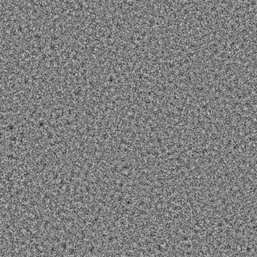 |
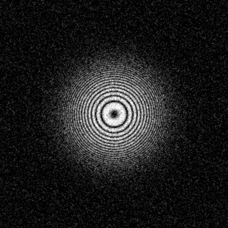 |
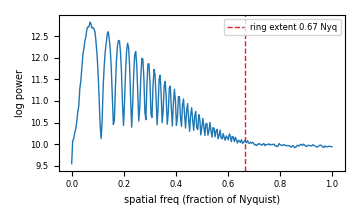 |
synth_good_01.mrc 1024x1024 |
PASS score 0.97 |
CTF: rings=28, extent=0.67 Nyq,
contrast=0.34 est. max res: 2.0 A est. defocus: 0.71 um Drift: hf_power=0.554, tenengrad=27.142 Contam: bright_outliers=0.00%, localvar_CV=0.12 Intensity: mean=100.0, std=1.9 |
good Thon rings, sharp, clean background |
| 2 |  |
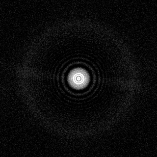 |
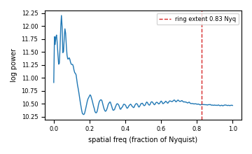 |
empiar10025_real_01.mrc 7676x7420 |
PASS score 0.96 |
CTF: rings=23, extent=0.83 Nyq,
contrast=0.28 est. max res: 3.2 A est. defocus: 1.27 um Drift: hf_power=0.824, tenengrad=23.202 Contam: bright_outliers=0.00%, localvar_CV=0.18 Intensity: mean=16.1, std=0.9 |
good Thon rings, sharp, clean background |
| 3 | 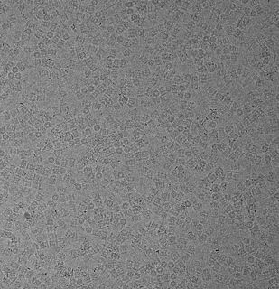 |
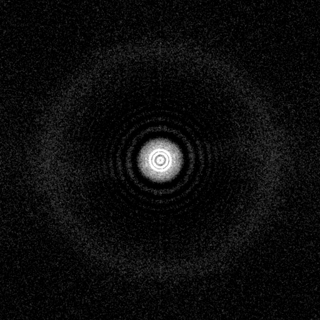 |
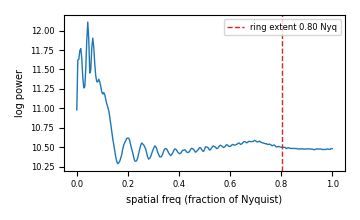 |
empiar10025_real_02.mrc 7676x7420 |
PASS score 0.90 |
CTF: rings=23, extent=0.80 Nyq,
contrast=0.20 est. max res: 3.3 A est. defocus: 1.34 um Drift: hf_power=0.828, tenengrad=23.207 Contam: bright_outliers=0.00%, localvar_CV=0.16 Intensity: mean=15.9, std=0.9 |
good Thon rings, sharp, clean background |
| 4 | 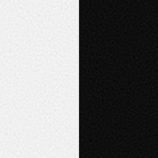 |
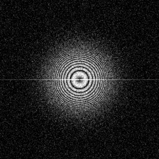 |
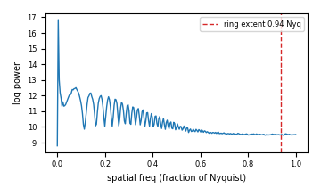 |
synth_carbon_01.mrc 1024x1024 |
FLAG score 0.78 |
CTF: rings=44, extent=0.94 Nyq,
contrast=0.33 est. max res: 1.4 A est. defocus: 0.71 um Drift: hf_power=0.526, tenengrad=0.233 Contam: bright_outliers=0.00%, localvar_CV=6.44 Intensity: mean=130.0, std=30.1 |
non-uniform texture (local-var CV=6.4) -> carbon/contam |
| 5 | 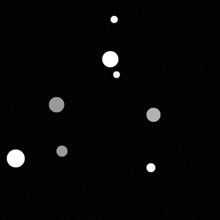 |
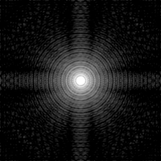 |
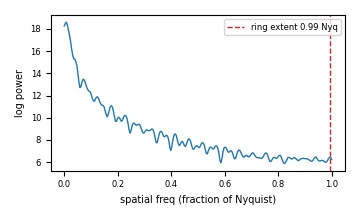 |
synth_ice_01.mrc 1024x1024 |
FLAG score 0.65 |
CTF: rings=21, extent=0.99 Nyq,
contrast=0.29 est. max res: 1.3 A est. defocus: 0.49 um Drift: hf_power=0.051, tenengrad=1.987 Contam: bright_outliers=2.16%, localvar_CV=8.17 Intensity: mean=106.2, std=43.1 |
bright outlier pixels 2.2% -> ice/contamination; non-uniform texture (local-var CV=8.2) -> carbon/contam |
| 6 | 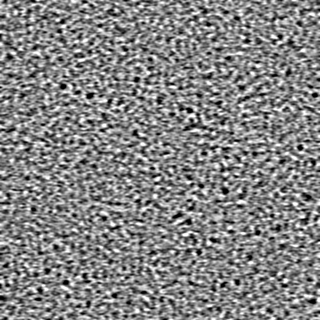 |
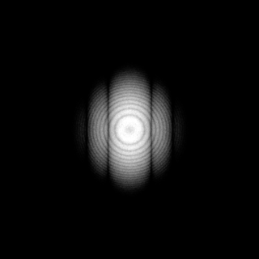 |
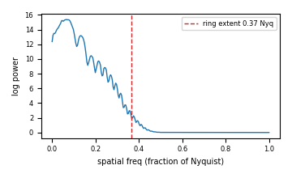 |
synth_drift_01.mrc 1024x1024 |
REJECT score 0.56 |
CTF: rings=9, extent=0.37 Nyq,
contrast=0.18 est. max res: 3.6 A est. defocus: 0.69 um Drift: hf_power=0.000, tenengrad=5.504 Contam: bright_outliers=0.00%, localvar_CV=0.69 Intensity: mean=100.0, std=0.4 |
low high-frequency power (hf_frac=0.000) -> drift/blur; HARD REJECT: severe drift/blur |
Metrics: CTF Thon-ring detection from the rotationally-averaged
power spectrum (extent toward Nyquist → estimated max resolution; first-ring
spacing → rough defocus). Drift high-frequency power fraction +
Tenengrad gradient energy (low → drift/blur). Contam robust
bright-outlier fraction + local-variance uniformity (ice / carbon / ethane).
Verdict combines weighted sub-scores with hard gates.